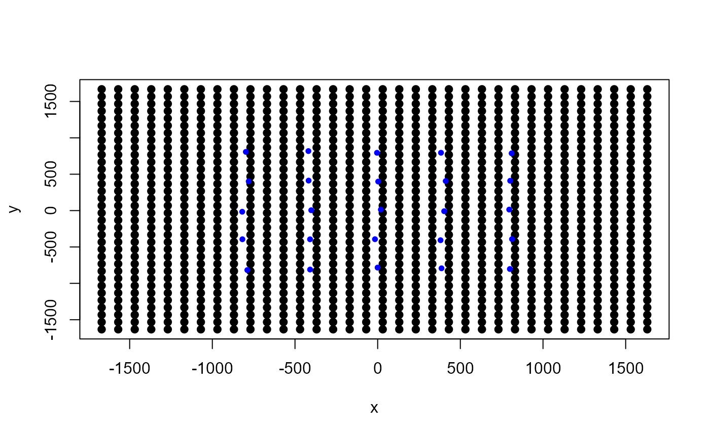

grid_classic.RdReturns a list of a matrix or array object of grid
coordinates and an Extent object from the raster package as a
state-space.
grid_classic(X, crs_, buff, res)Either a matrix or array representing the coordinates of traps in UTMs. An array is used when traps are clustered over a survey area.
The UTM coordinate reference system (EPSG code) used for your location provided as an integer (e.g., 32608 for WGS 84/UTM Zone 8N).
The distance (m or km) that the traps should be buffered by as an integer. This is typically 3 times the sigma parameter.
The grid cell resolution for the state-space.
grid A list of a matrix or array of grid coordinates.
ext An extent object from the raster package.
This function supports spatial capture-recapture analysis by
creating two outputs that are used to define the state-space. If a habitat
mask is not used, then only the Extent object from the raster
package is needed under a uniform state-space.
The matrix or array object can be used to develop a habitat mask in a uniform
state-space or as a discretized state-space.
A matrix object is returned if the coordinates of the traps are a matrix (i.e., 2D), otherwise an array object is returned when trap coordinates are in a 3D array.
# simulate a single trap array with random positional noise
x <- seq(-800, 800, length.out = 5)
y <- seq(-800, 800, length.out = 5)
traps <- as.matrix(expand.grid(x = x, y = y))
# add some random noise to locations
traps <- traps + runif(prod(dim(traps)),-20,20)
mysigma = 300 # simulate sigma of 300 m
mycrs = 32608 # EPSG for WGS 84 / UTM zone 8N
# create state-space
Grid = grid_classic(X = traps, crs_ = mycrs, buff = 3*mysigma, res = 100)
# make plot of grid and trap locations
par(mfrow=c(1,1))
plot(Grid$grid, pch=19)
points(traps, col="blue",pch=20)
